Objetivo
Al terminar tendrás un Muelle (Area2D) sobre el suelo. Cuando el personaje lo toque, el muelle se estirará con una animación y lo lanzará hacia arriba con apply_central_impulse.
Partimos de: El proyecto del tutorial 3 (Suelo, Personaje que se mueve con las flechas y Zona con contador) más la imagen muelle.png, que ya viene en el zip de inicio.
Nodos que usamos
AnimatedSprite2DComo un Sprite2D, pero con varios dibujos (fotogramas) que se van turnando para formar una animación.
SpriteFramesRecurso que guarda las animaciones del AnimatedSprite2D: cada una con su nombre, sus fotogramas y su velocidad.
Hoja de spritesUna sola imagen con todos los fotogramas en fila. Godot la corta en trozos iguales.
play("nombre")Reproduce la animación con ese nombre desde el código.
Paso a paso
1Punto de partida
Abre el proyecto y selecciona el nodo raíz Node2D. En el Sistema de Archivos está muelle.png: una hoja de sprites con los 8 dibujos del muelle en fila.
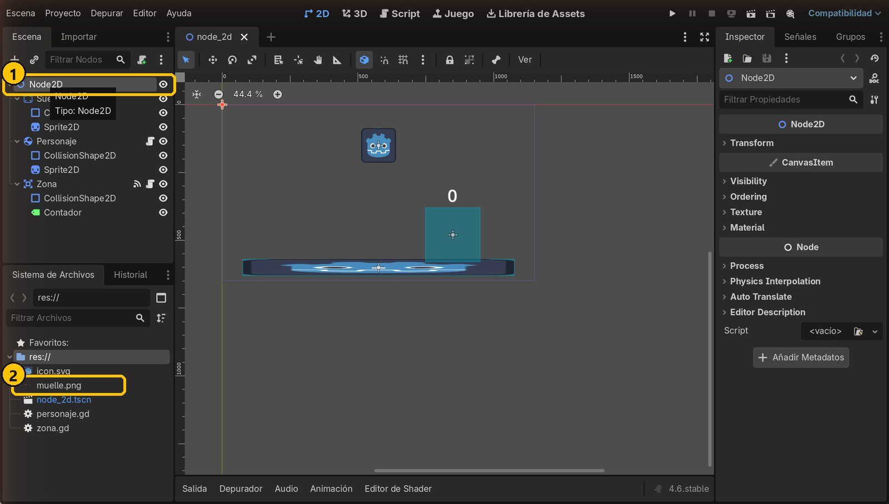
- 1Nodo raíz
- 2Hoja de sprites
2Añade un Area2D
Pulsa +, busca Area2D y pulsa Crear. Cámbiale el nombre a Muelle (F2).
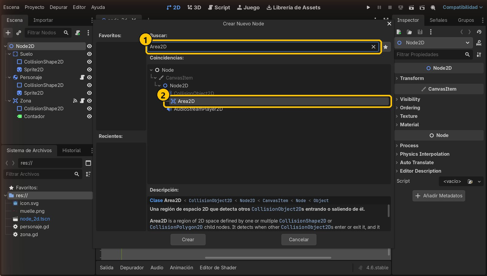
- 1Busca Area2D
- 2Area2D
3Dale forma y colócalo
Añade a Muelle un CollisionShape2D con un RectangleShape2D de 112 × 112. Selecciona Muelle y pon Position x = 250, y = 514: queda apoyado en el suelo, a la izquierda.
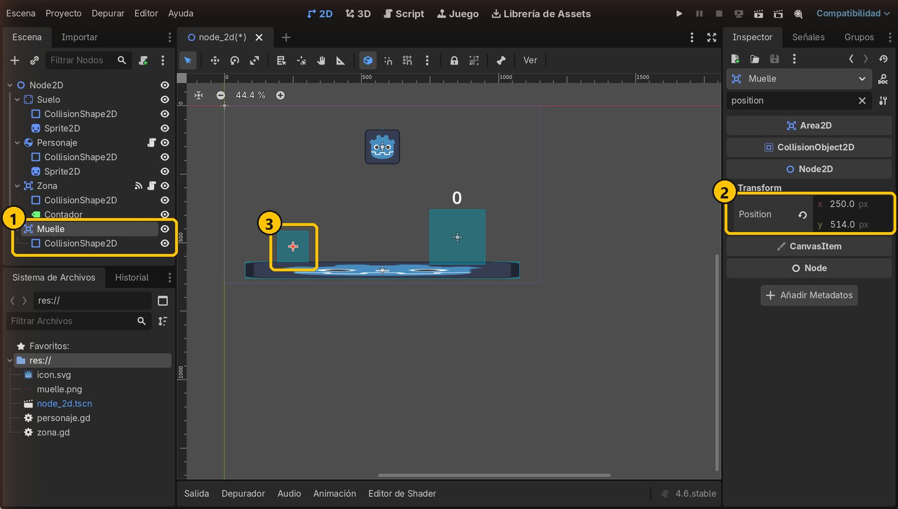
- 1Muelle y su forma
- 2Position: 250, 514
- 3El muelle en el visor
4Añade un AnimatedSprite2D
Con Muelle seleccionado, añade un hijo AnimatedSprite2D.
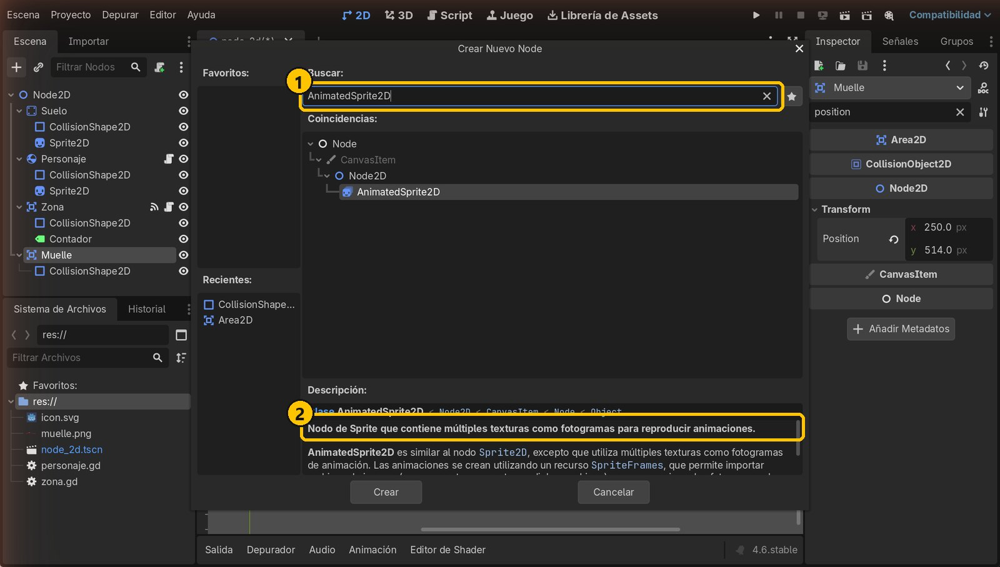
- 1Busca AnimatedSprite2D
- 2Varios dibujos = animación
5Crea un SpriteFrames
En el Inspector, despliega Sprite Frames y elige Nuevo SpriteFrames. Después haz clic sobre él: abajo se abre el panel Fotogramas de Sprite.
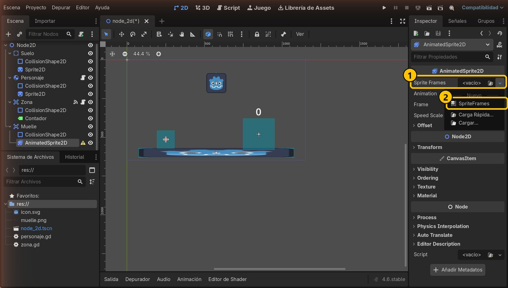
- 1Sprite Frames
- 2Nuevo SpriteFrames
6Corta la hoja de sprites
En el panel, pulsa el botón Añadir fotogramas desde una hoja de sprites (icono de cuadrícula) y elige muelle.png. Pon Horizontal 8 y Vertical 1, pulsa Elegir Todo y luego Añadir 8 Fotograma(s).
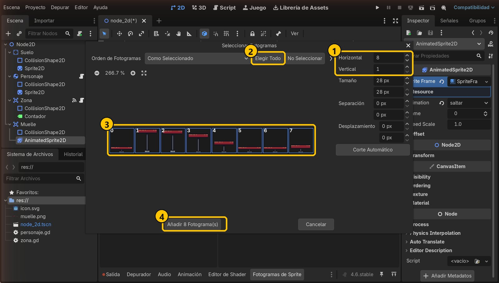
- 18 × 1
- 2Elegir Todo
- 3Los 8 fotogramas
- 4Añadir
7Prepara la animación
Haz doble clic en default y renómbrala a saltar. Pon 15 FPS y desactiva el bucle (el botón de las flechas en círculo): el muelle se estira una vez y se para.
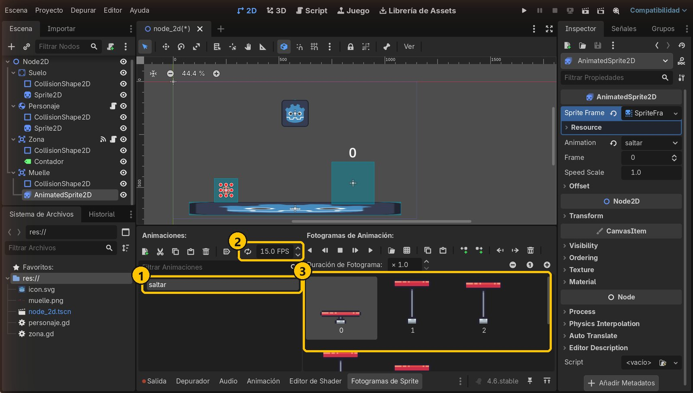
- 1Animación «saltar»
- 2Sin bucle, 15 FPS
- 3Fotogramas
8Escala y filtro
El dibujo mide solo 28 px. En Transform → Scale pon 4 y 4. En CanvasItem → Texture → Filter elige Nearest para que el pixel art se vea nítido y no borroso.
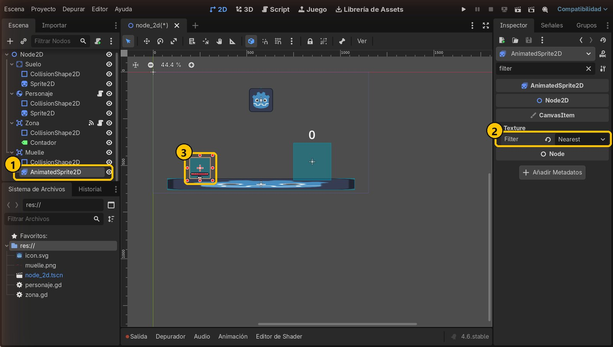
- 1AnimatedSprite2D
- 2Filter: Nearest
- 3Escala 4
9Añade un script al Muelle
Selecciona Muelle y pulsa el botón de añadir script. Hereda de Area2D y se guarda como res://muelle.gd. Pulsa Crear.
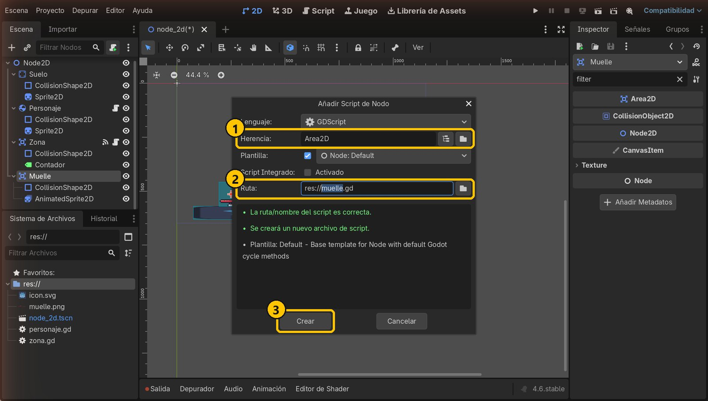
- 1Hereda de Area2D
- 2muelle.gd
- 3Crear
10Conecta la señal body_entered
En la pestaña Señales, haz doble clic en body_entered. Elige Muelle como receptor (baja en la lista si hace falta). El método se llamará _on_body_entered. Pulsa Conectar.
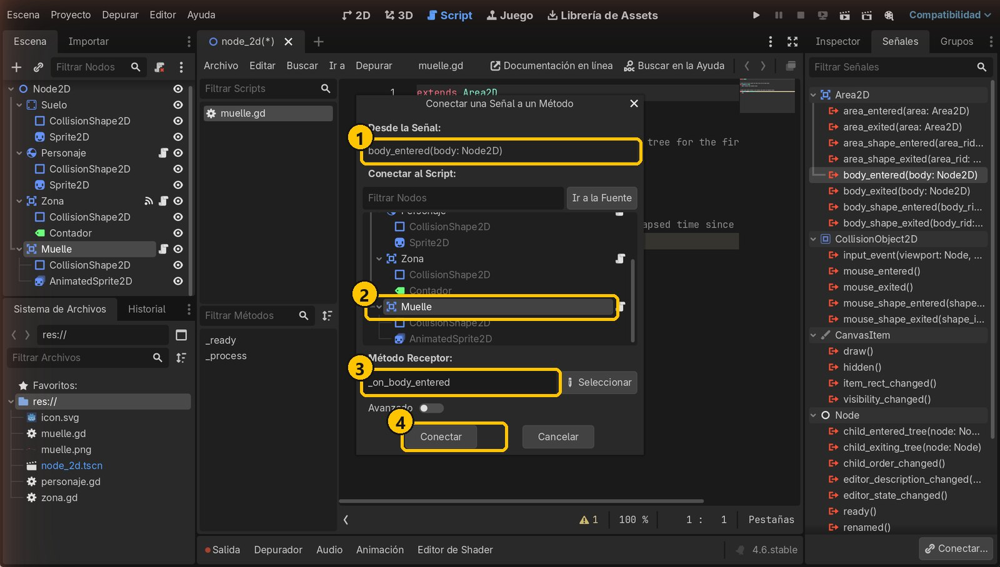
- 1body_entered
- 2Receptor: Muelle
- 3Nombre de la función
- 4Conectar
11Escribe el código del muelle
Sustituye el script por este código y guarda. Si lo que entra es un RigidBody2D, reproduce la animación saltar y empuja al cuerpo que ha entrado (body) hacia arriba.
extends Area2D
func _on_body_entered(body: Node2D) -> void:
if body is RigidBody2D:
$AnimatedSprite2D.play("saltar")
body.apply_central_impulse(Vector2.UP * 1000)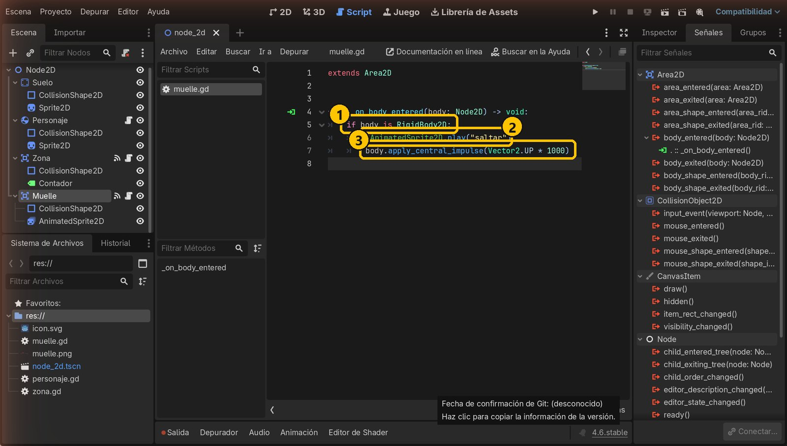
- 1¿Es un RigidBody2D?
- 2Reproduce «saltar»
- 3Impulso hacia arriba
12Ejecuta y salta
Ejecuta con F5 y pulsa ←. Cuando el personaje toca el muelle, este se estira y lo lanza hacia arriba.
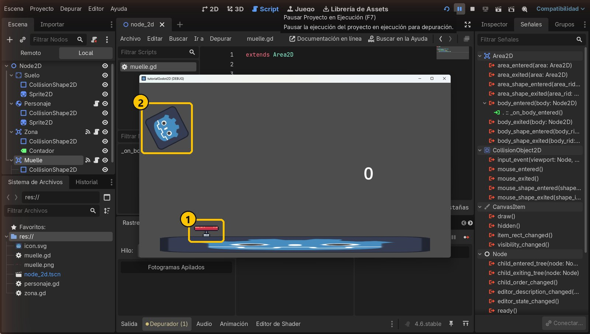
- 1El muelle se estira
- 2¡Arriba!
Resumen
- Un AnimatedSprite2D reproduce animaciones hechas de fotogramas (SpriteFrames).
- Con
play("saltar")eliges qué animación se reproduce. body_enteredte da el cuerpo que ha entrado: puedes empujarlo conapply_central_impulse.
Si algo falla
- El muelle no se anima. El nombre de
play("saltar")debe ser exactamente el de la animación del panel (minúsculas incluidas). - La animación no para nunca. Desactiva el bucle de la animación en el panel Fotogramas de Sprite.
- El muelle se ve borroso. Pon Texture → Filter en Nearest en el AnimatedSprite2D.
- Error «Node not found: AnimatedSprite2D». El AnimatedSprite2D debe ser hijo de Muelle y conservar su nombre.
- No sale disparado. Mira que la función tenga el icono verde (señal conectada) y que el receptor sea Muelle.
Prueba tú
- Cambia la fuerza a
1500: ¿hasta dónde llega? - Pon el impulso en diagonal con
Vector2(1, -1). - Saca la fuerza a una variable
@exportcomo en el tutorial 2 y ajústala desde el Inspector.